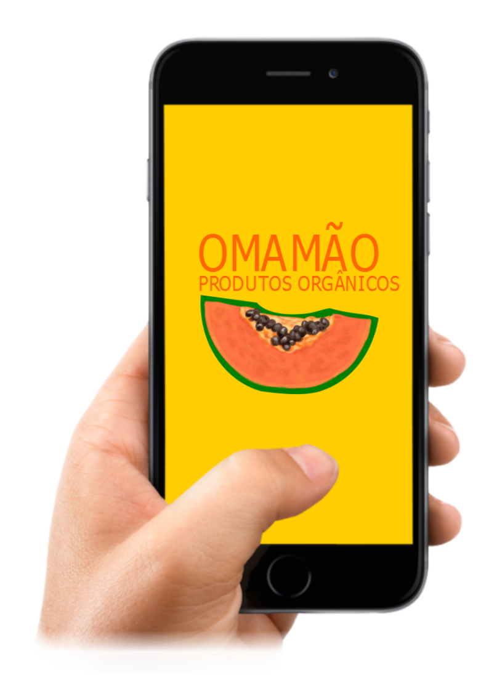

Sobre nós

O OMAMÃO é uma iniciativa sem fins lucrativos que visa a união do produtor e consumidor sem
intermediários, criamos este projeto com o intuito de auxiliar o pequeno produtor e instigar mais pessoas a terem uma alimentação limpa e sem agrotóxicos.